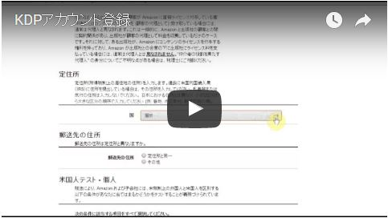
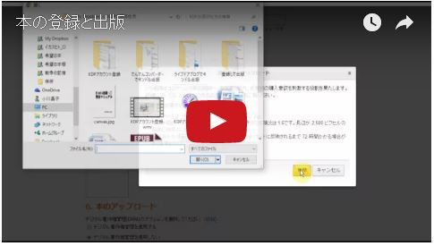

| Kindle本を書き上げる技術: 「書きたいのに書けない」を突破する！個人出版を目指す人が最初に読む本 | |
| 小川 晶子 | |
| Samurai Copy-writing (2016) | |
小川晶子
この本は、はじめて電子書籍を書く人が、最後まで書き上げるための本です。とくにKindle本に焦点を当てています。
２０１２年にＫＤＰ（キンドルダイレクトパブリッシング）が日本に上陸し、Amazonという巨大なプラットフォームで誰でも簡単に電子書籍を販売できるようになりました。
「本を読む人」が、すぐにでも「本を書く人」になれる時代になったのです。
もちろん、これまでも本を書いて出版する方法はいくつかありました。多くの人にとって理想的なのは出版社から商業出版として出すことでしょう。自分の名前で出した本が全国の書店に置かれ、これまで知り合うことができなかった人たちが読んでくれます。ベストセラーにでもなれば、何万人、何十万人の人に知ってもらうことができますし、印税も入ってきます。
本が好きで、これまで本に影響を受けてきた人ほど、「いつかは自分も」と夢見るのではないでしょうか。
実際、私の周りにも「自分の本を書きたい」という人がたくさんいます。私自身はライターとして出版業界界隈にいるので、「どうしたら本が出せるかな？」「どうやって書いたらいいかな？」と相談されることがよくあります。
商業出版はその名のとおり、ビジネスとして成り立たなければなりません。「売れる本」という見込みがなければ、出版社はお金を出して編集したり印刷したりすることができないんですね。だからもちろん企画に対してシビアです。本を出したい人はたくさんいるけれど、商業出版できる人は一握りです。
自費出版という選択肢もあります。ただ、印刷等の費用を全部自分で持つということですから、数百万円かかってしまいます。それこそ「お金を貯めていつかは」という話でした。
それが、電子書籍なら出版にコストがかかりません。出版社を通さなくても、個人で出版することができます。これはものすごいことです。
本を書きたいなら、今すぐにでも書けばいいのです。
出版社から本を出したいという人も、まずは電子書籍で出して、実績を作ればいいと考えることもできます。商業出版するためには、「この本は売れる！」と示す必要がありますが、実際にKindleで売れていれば証拠材料になります。
ですから、「本を書きたい」という人に「まず電子書籍を出してみたら？」と言うのですが、「書きたいけど書けない」人がけっこういます。
考えてみれば、個人出版には編集者がいません。原稿をアドバイスしてくれる人がいないし、本として完成度を高めてくれる人がいないのです。締め切りもないし、本を書くスケジュールは自分で決めなければなりません。
「書きたいなら書けばいい」と言っても、難しい部分があるのですね。
そこで、Kindle本を書いて出版したいけれど、どうやっていいかわからないという人向けに、一冊書き上げる技術をお伝えしようと思いました。
私はこれまでブックライター（ゴーストライター）としてビジネス書、自己啓発書、実用書を30
冊以上（紙の本）、自著はKindle本を入れて３冊ほど書いてきました。ブックライターとして書いた電子書籍も、すでに５冊になりました。
これまで蓄積してきたノウハウが、お役に立つかな？と思っています。
本書は、本の企画を考えるところから、読みやすい本にするためのさまざまな技術、最後まで書き上げるための方法を網羅しています。主にビジネス書等ノンフィクション系の本を書くためのノウハウですが、それ以外の本を書く際にも役立つ情報はあると思います。
Kindle本の特性に焦点を当て、一般的な「本の書き方」とはちょっと違う部分もシッカリ入れているのが特徴です。
電子書籍フォーマットへの変換の仕方やＫＤＰへの登録方法など、一見難しそうだけれども「見れば簡単」という内容は動画で解説しつつ、コンパクトでわかりやすい本を目指しました。こういったことができるのも、Kindle本だからです。
一人の本好きとして、「Kindleならではの面白い本」に出会いたい、たくさん読みたいと思っています。本書があなたの本デビューの一助になれば、こんなに嬉しいことはありません。
２０１６年５月 小川晶子
あなたはKindle本をよく読みますか？
Kindleアプリさえ入れればスマートフォンでも気軽に読めるようになったので、今は本当に身近な存在ですよね。
「読みたい」と思ったら１クリックでダウンロードでき、本棚のスペースを心配する必要もありません。
旅先でも、通勤や移動の途中でも、まったく荷物にならずに本を読むことができます。
「本は紙で読みたい」と言っていた私もこの便利さに慣れてしまい、Amazonで本を買うときにはまずKindle版があるかどうかチェックしています。
これからKindle本を書くにあたり、あなた自身がよくKindle本を読んでいるというのは重要です。Kindle本をたくさん読んでいれば、どんな本を書くかイメージがしやすいでしょう。
すでにおわかりのことと思いますが、Kindle本を書く（個人出版する）のと、紙の本を書くのとはかなり違います。
最初に、前提としてこの違いを確認しておきたいと思います。
まず、分量。
通常、一冊の本にするには文字数にして７万から10
万字ほど必要になります。このくらいの文字量で、２００ページ前後の本になります。
多すぎると削ることになるし、足りなければなんとかして書き足さねばなりません（どっちも苦労します......）。
一方、Kindle本は自由です。分量に制限はありません。数ページしかなくても、１０００ページあってもＯＫです。
ただ、多くの人がスマホで隙間時間に読んでいることを考えると、紙の本ほどボリュームがあるのは読者にやさしくありません。いまのKindleユーザーのメインは20
代から40
代男性と言われています。通勤や移動の時間にチョコチョコ読んで半日や一日で読み終わる手軽な本が人気が出やすいようです。
私はライターとしてKindle本を書くことになったとき、まずは大量にKindleで個人出版された本を読み、レビューをチェックしました。読者のイメージをリアルにしたかったからです。すると、「（紙の本は長くて疲れるが）このくらいコンパクトにエッセンスがまとまっている本がありがたい」というような感想をけっこう見かけました。ちなみに、私のKindle本に対しても「コンパクトで余計なことが書いていなくて良い」という感想をいただきました（笑）。
実際、Kindle本で多いのは２万字から３万字程度のものです。紙の本の３分の１とか４分の１くらいのイメージですね。ちなみに本書は約２万８千字です。１時間程度で読める分量ですね。
（もちろん、読者が求めているのは内容が一番であって、その内容を伝えるのに適切な分量であることが重要です。「内容が薄い」本は当然嫌われますので念のため！）
仮に、あなたがこれから書くKindle本に必要な分量を２万字としておきましょう。
これはかなりハードルが下がります。
コンパクトに伝えるというのは、本来技術がいるものではあるのですが、長い文章の「論理を通す」という重労働に比べると、まだ気楽さがあります。取り組みやすいです。
文章もカジュアルな感じで受け入れられます。
いわばブログやメルマガの延長的な文章でもいいのです。
ただし。
分量が３分の１だからといって、労力が３分の１にはなりません。
「編集者がいない」という、ものすごく大きなファクターがあるのです。
編集者がいたらやってくれることを、全部自分でやらなければいけません。
こういった、本としての体裁を整える作業は実はけっこう労力がかかります。
また、編集者がいないデメリットはもっと根本的なところにもあって、
のです。
ざっくり言えば、Kindle本はかなり取り組みやすいけれど、編集者の役割もこなすことが必要ということです。
「本を書きたいけど書けない」という場合、つまずいている場所はそれぞれでしょう。
ただ、大きく分けると、３つの壁が存在しています。
書くことがない
書き方がわからない
書く環境にない
の３つです。
１つめは、「書くことがない」。
書くことがなければ、そりゃ書けませんよね。昔書かされた作文や小論文は、けっこうこの「書くことがない」壁にぶち当たって苦しんだのではないでしょうか。
学芸会についての作文を書けと言われても、たいして参加していなかったら書くのがとても苦しい。グローバル化について書けと言われても、まったく興味がなかったら書くのが苦しい、という。
でも、普段から考えていることだったり、書きたいことなら書けます。
「本を書きたいけれど書けない」という場合、書きたいネタはあるのではないかと思います。ただ、そのネタが本になるのだろうか？という疑問はあるかもしれません。もっともな疑問です。「本」という商品にするためには、読者に何かしらの価値を提供しなければなりません。書きたいことを書きたいように書いて本になるわけではないのです。
（個人出版のKindle本も、読者がお金を払う「商品」である以上はこのように考えたいと思います）。
逆に考えると、いまは気づいていないけれど、読者に価値を提供できるものをあなたは持っているかもしれません。自分では気づいていない「強み」です。それは本にすることができるはずです。
ですから、本になるネタの出し方や、そのネタを企画と言えるものにまで昇華させる方法についてお伝えしたいと思います。
２つ目の壁は「書き方がわからない」。
書きたいネタはあるけれど、本ってどうやって書いたらいいの？ということです。
本を書く流れや、本の構成、本として完成させるために必要な要素の話になります。
とくに重要なのが構成です。１０００文字２０００文字なら、つらつらと書いていくことができますが、２万字となると構成が必要です。どこから始まって、どう終わらせるのか。どういう順番で書いていけば、読者に伝わるのか、考えて組み立てていく必要があります。
構成のほか、書き始める前にいくつか準備が必要だし、書いている最中、いったん書いたあとにもやることがあります。
編集者を頼れない個人出版の場合、どうやって本として完成させたらいいのかわからないことが大きなハードルになりますよね。電子書籍フォーマットへの変換や本の登録も必要になるので、これについても解説します。
そして３つ目は、「書く環境にない」。
ネタもある、書き方もわかっている、でも書けない。
それは、書く環境にないからです。
時間をとってパソコンや紙に向かわなきゃ書けません。
「時間がなくて書けません」という方は多いですが、要するにこの「書く環境」を作っていないということですよね。ネタもあって書き方もわかっているなら、書けばいいじゃないかと思ってしまうところですが、意外とこの壁もバカにできないのです。
プロのライターである私も、この壁にぶちあたってしょっちゅう悩んでいます。
とくに出産前は、バリバリ働くライターでしたが、いつも「書けない書けない」言っていました。なぜかというと、飲みに行っているから（笑）。ほかにも、やたらと打ち合わせしているとか、相談にのっているとか。
いまは１歳の子の育児で忙しくて書けない......。
当たり前ですけど、書くためには自分を書く環境に置かなければなりません。このあたりを解決する話もします。
それでは早速、次章から３つの壁を超えるためのヒントをお伝えしていきます。
「誰でも一生に一冊は本を書ける」と言われます。
すべての人は、他の人にはない経験を持ち、ドラマのある人生を生きています。世間的に成功しているかどうかは関係ありません。その人独自の経験や知識を価値に換えて出せばいいのです。
「一生に一冊」というと重く感じるかもしれませんが、ここでは「誰でも」が重要です。
これから書こうとしているのは約２万字のKindle本ですから、一冊と言わず、30
冊くらいいけるのではないでしょうか。
そのくらいたくさんネタは眠っているし、同じネタでも切り口を変えて出すこともできます。それに、「次はこういうテーマで書きたい」と思ったら、ネタを集めていけばいいのです。一気にたくさんは無理でも、時間をかけてテーマを見つけながら書き続ければ、30
冊くらいにはなると思います。
30
冊くらい書いたうち、一冊が紙の本にもなる。
それが誰でもできる。
そんなイメージです。
紙の本になるには、一定数以上売れる見込みがなきゃダメなのですが、Kindle本は売れる見込みが低くても（売れるかどうかわからなくても）チャレンジできますので、とにかくまずはネタ出しをしてみましょう。
あなたの中に眠る本のネタを、６つの視点で引っ張り出してみます。ぜひ、アイデアをメモしながら進めてください。
（１）専門分野
まずはこれです。仕事で携わっている分野のこと、専門的知識やスキル。自分では当たり前のように感じることも、専門外の人からすると面白かったり勉強になったりします。
業界の中ですごい地位にいなくてもいいのです。専門外の人に、わかりやすく教えてあげると考えてみましょう。
私の場合は、専門分野がブックライティング、コピーライティングですので、文章術系の本を書くことができます。
また、ライターの仕事術なんかも書けます。すでに出した『ライターはいくら稼げるのか？』、『プロフィール作成術』は専門分野の本です。
（２）人から聞かれること
専門分野でないのに、よく人に聞かれることはありませんか？
「どうやっているの？」
「どうしてうまくいっているの？」
質問されたり相談されるのは、それが人より秀でているからでしょう。
周りの人が知りたいと思うのですから、立派な本のネタになります。
（３）失敗、苦手、コンプレックス
誰でも失敗（辛い経験）や苦手・コンプレックスはあるもの。
それを乗り越えたら、ネタになります。
いま苦しいと思っている人に、ヒントとなる本ができるのではないでしょうか。
たとえば、あがり症だった人がそれを乗り越えて講演をするようになった、恋愛ベタでフラれ続きだったが最良のパートナーと出会えたなどです。
（４）趣味
大好きなこと、ハマっていることはネタになります。
人より知識があるし、愛情こめて書くことができます。
紙の本では出しづらいニッチな本もKindleならいけます。コアな読者の心をつかむ本をぜひ書いてほしいです！
Kindle本ではなくリトルプレス（自費出版の小冊子）ですが、絵馬に書かれたお願いごとを見るのが趣味の人がそれを本にしていました。最高に面白かったです（笑）。
（５）興味・疑問
趣味とはちがうけれど、興味があること。ふだん疑問に思っていること。調べたい、知りたいと思うこと。
リサーチが苦でないことはネタになります。徹底的に調べて取材して本にしちゃえばいいのです。
ライター、ジャーナリストの本は、多くがこれですよね。興味のあることをテーマにし、調べて取材して本にしています。
私はこれがKindle本でできるという可能性にワクワクしています。取材費の捻出が課題にはなるでしょうが、少なくとも出版にコストはかからないのです。
（６）体験談
Kindle本は体験談がけっこう多いです。ちょっと先行く先輩の体験談が、喜ばれる文化があると思います。
珍しい体験、面白い体験はもちろんですが、「私の場合」っていうのもいけるんですね
（面白く語ることは必要ですが）。
たとえば、「立ち会い出産」のプロである必要はなく、「私の場合の体験談」を面白く書けば喜ばれるのではないでしょうか。
以上で６つ。
当てはめながら考えてみると、けっこう出てきます。
書きたい、これなら書けるって思えることは重要です。
少しでも売れる本を書くには、シンプルに言えば「読者が読みたい本を書けばいい」わけですけど、 そもそも書きたいネタでなければ書き上げるのが難しいので。
やはり情熱が必要なんですよね。書き手の熱は読み手にも伝わります。
ところで、出版業界のジャイアンこと出版プロデューサーの吉田浩さんは『本を出したい人の教科書』（講談社）
の中で、コーチ、カウンセラー、セラピスト、コンサルタントは有利に本が出せるとおっしゃっています。
なぜなら、本とは「人と人との関係性で体系化された読み物」であり、「人の悩みを解決する職業」である彼らは「引き出し」をたくさん持っているからです。私はこれを読んで、なるほど、確かに！と思いました。実は私がライターとして本づくりをお手伝いさせていただいているのは、多くがここに挙げた職業の方です（とくにコンサルタント）。
日ごろ人とコミュニケーションをとりながら、目の前の人の「問題を解決しよう」と考えている人ほど、本のネタはあるのかもしれません。
本のネタを考える際に、吉田さんの『本を出したい人の教科書』はとても役立つと思います。ぜひ読んでみてくださいね。
それでは、出したネタを「本の企画」にしていきます。「コンセプトを決める」とか「本の切り口を決める」という言い方でもいいでしょう。
多くの人は「ここが難しいんだよ」と言います。
そうなんです。ここが難しいのですが、避けて通れません。頑張りましょう。
誰の許可もいらない個人出版本ですから企画書を作る必要はありませんが、次のことは言えるようにしたいところです。
「この本は、○○(ターゲット)の○○を解決する本です」
「類書と違うのは○○です」
「伝えたいメッセージは○○です」
○○が埋まればО
Ｋです。ちゃんと本になるでしょう。
本書を例にとると、
「この本は、本を書きたい人の『書けない』を解決する本です」
「類書と違うのは、Kindle本に特化した執筆技術について示しているところです」
「伝えたいメッセージは『あなたの強みをメッセージにして、読者を幸せにする本を書こう』です」
こんなふうに、ごく短い言葉で「どんな本なのか」言えるようにします。コンセプトが明確になると、書くべきこともわかってきますね。それはつまり、「何を書かないか」を決めることでもあります。何を書き、何を書かないか。最初にイメージしておくことは大切です。サービス精神であれこれ詰め込みたくなるかもしれませんが、詰め込むほど何の本だかわからなくなってしまいます。
○○を埋めるためには、３つの作業が必要になります。
これをやらないと埋まりません。
本を書く目的の話の前に、リサーチについてお伝えしましょう。
読者ターゲットの悩みをできるだけリアルにイメージするため、いくつかの方法でリサーチします。
【読者について調べる】
（１）インターネット検索
テーマについて検索すれば、どんな記事が人気があるのか、どんな悩みがあるのかたいてい見つかります。
たとえば、フリーランス初心者のための本を書きたいと思ったら、フリーランス検索をします。
読者になる人が、どんなキーワードで検索するか想像して、たとえば「フリーランスになるには」と入れてみます。
すると、たくさんのコンテンツが出てくるので、上位表示されている記事にはどんな内容があるのか見ます。
上位表示されているということは、単純に言って人気があるということです。
それから、Ｑ＆
Ａサイトの中で検索します。
こちらは、悩みを持っている人のリアルな声がたくさん見ることができます。
（２）類書のレビュー欄
もちろん類書も読みます。
そして、Amazonのレビュー欄をチェックしましょう。
これがものすごく勉強になります。
「こういうところが参考になった」
「もっとこういうところが知りたかった」
具体的に書いている人がけっこういるのです。
読者がどういう本を期待しているのかわかります。
（３）直接聞く
読者像に近い人に直接聞きます。
「どういうことが知りたい？」
「どんな本だったら読みたい？」
複数人に聞きましょう。
ソーシャルメディアを使って、質問を受け付けるのもいいと思います。相談にのってあげながら、コンテンツを作っていくことができます。直接聞くのが一番ですね。
【類書について調べる】
これはアマゾン内で検索して、紙書籍もKindle本も両方チェックします。
* どういうコンセプトの本か（タイトル、目次、まえがきでだいたいわかります）
* どういう人が書いているのか（著者プロフィール）
を意識して見てみましょう。
私は一冊書くのに類書を３冊から10
冊は読んでいます。
これらのリサーチにより、自分の場合はどういう本にしたらいいのかが見えてきます。
読者が求めていて、類書に足りないもの（類書と違う切り口や視点）がわかってくるのです。
一冊の本には１つのメッセージを込めます。
読者に対して、あなたが一番伝えたいことです。
いろいろ言いたいことはあるかもしれませんが、たくさんのメッセージを書いてしまうと結局何も伝わりません。「これだけは伝えたい」と思うものを１つ決めましょう。
このメッセージは、本を書く目的に通じているものです。
「何のために私はこの本を書くのか？」といったら、「このメッセージを伝えたいため」です。
あらためて、本を書く目的を考えてみてください。
「印税がほしいから」
「ブランディングのため」
「自分の本を残したい」
そういう目的もあるかもしれませんが、今回選んだネタで本を出す目的は他にもあるはずです。読者に対して、「これを伝えたい！」という想いが大事なのです。
一見有益な情報がきれいに並んでいても、メッセージのない本は魅力がありません。「伝えたい気持ち」が感じられない本は読者がついてきてくれないのです。
実は本書で伝えたいメッセージはこの部分です。
私は子どもの頃から本が好きで、「将来の夢は本屋さん」と言っていました。大好きな本に関わることができて、いまとても幸せなのですが、ときどき残念な気持ちになることがあります。
商業出版では売れる本を作らなければならないのは当然です。売れなければ成り立たないのですから。売れるというのは基本的に「読者がいる」ということですし、正しいのです。
それで、「売れる本を作ろう！」と頑張るわけですが、たまに著者さんに何もメッセージがないことがあるのです。
というのも......、
出版社のほうで「いまこういう本が売れる！誰々さんを著者にしよう！」と企画が持ち上がり、著者さんがＯＫを出したので取材に行きます。私は著者さんのメッセージを引き出そうと質問します。
「いま、どういう想いでこの本を出されることにしたのですか？」
「......。別に、想いなんてないけど」
え......。
著者さんにはとくにメッセージがないけれど、「売れるから」ということで本にする場合もあるのですね。他にも、「出版点数が必要なので、○月に出したい」というような事情もあったりします。
読者としては残念ですが、まぁ、仕方ないところもあるのでしょう。自分を納得させながら（最大限心を込めることにして）、原稿を書くことがあります（でも、結局こういう本は関係者の心に火がつかないのでたいして売れません）。
でも！
個人出版はそんな大人の事情（？）が関係ありません。売るための努力は必要ですが、その前に「どうしても書きたい、伝えたい」というエネルギーで本ができていいはずです。本当に届けたい人に向けて書くことができますし、いろいろなチャレンジができます。それがインディーズの面白さです。
だから、電子書籍に関わり始めて、Kindle本を大量に読みながら「知られざる面白い本があるのではないか」とちょっとワクワクしたんですよね。
ところが、フタを開けてみたら、「売れる本にしたくて書きました」みたいな本がたくさんありました。本を書く目的というか動機の部分が、よくわからないのです（見込み客のリストを集めるといった動機は見えたりしますが）。
もちろん、いい本、面白い本もあります。でも、割合的にはまだ少ないように感じます。本当はもっともっと可能性があるはずです。
出版業界が、「うわぁ、こんなの書く人がいたのか！！」って驚くような本が出てきてほしい......。
それには、やはり読者へのメッセージです。どうしても伝えたい想いです。これは核の部分に必要だと思います。逆に言うと、これさえあれば、あとはちゃんとリサーチして書けばいい本ができるはずです。
もちろん、メッセージだけでは商品になりません。
熱い想いを本にぶつければいいわけではありません。
伝えたいメッセージを、どうしたら伝えられるか？よく考える必要があります。読者が読みたいものを書いて、その中にメッセージを込めるのです。
「読者が読みたいものを書く」というのはものすごく重要です。
「読者が読みたいもの」を提供できるのが「書き手の強み」です。「Kindle本のネタ出し６つの視点」は、いわば書き手の強みを見つける方法でした（強みとは、関係性の中で決まるものです。このあたりについて詳しくは『プロフィール作成術』
に書いていますのでご興味があればお読みください）。
ということで、この本のメッセージとして一言にまとめるなら「あなたの強みをメッセージにして、読者を幸せにする本を書こう」です。これを伝えることが本を書く目的です。
あなたも、本を書く目的をあらためて考え、メッセージを一つ決めてみてください。
コンセプトが決まったら、目次を作りましょう。
どういう順番で何を伝えて行くのか。いわば本の設計図ですね。
設計図なしには、不安で書き始められません。着地点が見えなくて、書きながらよくわからなくなってきます。
完成のイメージを持ってから、書き始めるのが大事なんですね。
細かい目次ができてしまえば、あとは本当に書くだけです。淡々とやっていけば完成します。
では、どうやって目次を作ればいいのでしょうか。
やり方は大きく分けて２つあります。
目次のフォーマットに要素をあてはめていくやり方と、要素をバンバン出してから、並べていくやり方。
目次のフォーマットがどこかにあるわけではないですが、一般的に伝わりやすい順番というものがあります。
ビジネス書・自己啓発書の場合は、神田昌典さんのおっしゃるＰＡＳＯＮＡの法則を参考にさせてもらうとわかりやすいでしょう。ＰＡＳＯＮＡの法則とは、お客さまにメッセージを伝えるときの「効果的な伝え方の順番」を表したもので、コピーライティングの世界ではもはや常識とされています。ビジネス書・自己啓発書を作るときも、読者に行動してもらいたいので「ＰＡＳＯＮＡの法則にのっとって構成を考えましょう」と話すことはよくあります。
最近神田昌典さんが出された『稼ぐ言葉の法則』（フォレスト出版）の中では、より時代に合った「新・ＰＡＳＯＮＡの法則」として紹介しているので、こちらを引用します。
Problem......問題
買い手が直面している問題、もしくは顧客が切望する欲求を明確化する。
Affinity......親近感
書い手と同じ痛みや、同じ望みを持っていることを、ストーリーや五感を通じて描写する。
Solution......解決策
問題が解決、もしくは欲求が実現できる方法があることを伝える。
Offer......提案
具体的な提案を行う。サンプル、モニター、お試しや、価格、特典を明示する。
Narrow down......絞り込み
提案を受け入れ、問題解決できる、もしくは欲求実現できる人が満たさなければならない条件を挙げる。
Action......行動
緊急に行動しなければならない理由を挙げ、行動へのあと押しをする。
本の構成としてシンプルにあてはめるなら、
現状の問題を共有して、共感してもらい、
だからこの本ではこういう解決を伝えますって言って、
具体的に解決方法を示して、
実際の行動を変えるレベルまで落とし込む、
そんな流れです。
第１章 なぜ、○○ができないのか
第２章 ○○すると解決する！
第３章 ○○基礎編
第４章 ○○実践編
第５章 明日から○○できるちょっとした習慣
みたいな感じですね。
意外と最初の「問題の共有」部分を飛ばしてしまったり、解決方法（結論）を最後までとっておいてしまったりするので、まずはこの流れで考えてみるといいのではないでしょうか。
そして、書きたいこと・書けることをあてはめていきます。
類書の目次をいくつか見て参考にしてみると、やりやすいでしょう。
もう一つは、要素を出してから並べていくやり方です。「○○の方法50 」とか「○○の法則77 」のような、カタログ的な本に適しています。
拙著『文章上達トレーニング45
』（同文館出版）
はこっちのやり方で目次を作りました。
文章上達のためのトレーニングには、どんなものがあるかな？
先輩に教えてもらった方法、私がやってきたトレーニングにはどんなものがあったかな？思い出しながらふせんに書いていきました。
ひととおり出したら、グルーピングしていきます。
「表現力」「構成力」「想像力」「論理的思考」など......
グループを作ってみると、表現力のトレーニングが多くて論理的思考が少ないなとか、バランスの悪いところがわかるので、じゃあ論理的思考を鍛える文章トレーニングには他にどんなものがあるかな？と考えて調整していきます。
そして、それをどういう順番に並べたらわかりやすいだろうか、読みやすいだろうかと考えて並べていくわけです。
ただ、ＰＡＳＯＮＡ的な部分も必要なので、問題点共有と解決策提示は「プロローグ」部分に書くことにします。
そしてできた目次がこちらです（最終的にこの目次にするには、編集者さんの力をかなり借りています）。
↓
プロローグ トレーニングで文章は上達する
・いい文章とは目的を達成することができる文章のこと
・いい文章を書くために、目的と読者を意識する
・文章が書けない３つの壁
・トレーニングでスラスラ書けるようになる
Training1 言いたいことを表現できる「言語化能力」
１．好きな理由を書く
２．目の前のモノを描写する
３．類語を調べる
４．別の表現に言い換えをする
５．スピード重視で止まらずに書く
Training2 読み手の共感を得る「表現力」
６．小説から感情表現を抜き出す
７．五感を使って書く
８．直喩を使って書く
９．隠喩を使って書く
10 ．具体化する
11 ．抽象化する
Training3 わかりやすい文章が書ける「論理的思考」
12 ．接続詞を使う
13 ．「問い・答え・理由」の構成で書く
14 ．事実と意見を分ける
15 ．論理的飛躍を見つける
Training4 最後まで読ませる「構成力」
16 ．話芸に親しむ
17 ．いい「書き出し」をストックする
18 ．構成メモをつくる
19 ．起承転結で書く
20 ．文章の並べ替えをする
Training5 スラスラ書けるようになる「文体・リズム」
21 ．いい文章を音読する
22 ．いい文章を書きうつす
23 ．長文を短文に分ける
24 ．短文と長文を混ぜる
25 ．文末を変える
26 ．キャッチコピーをマネる
27 ．作家に乗りうつって書く
28 ．同じ素材を3種類の文体で書く
Training6 読み手の心を動かす「想像力」
29 ．リアルタイムに要約して伝える
30 ．質問を予想する
31 ．反論を予想する
32 ．読み手の言葉を調べる
33 ．見た目を意識して書く
Training7 頭の中をスッキリ整理する「読解力」
34 ．本を読む
35 ．タイトルをつける
36 ．ニュースを140字に要約する
37 ．意訳してみる
38 ．引用して書く
Training8 自分らしい文章が書ける「発想力」
39 ．三題噺
40 ．なぞかけで遊ぶ
41 ．もじって遊ぶ
Training9 最後のツメで信頼を得る「推敲力」
42 ．自分の文章を音読する
43 ．自分の文章のクセを知る
44 ．他人の文章を添削する
45 ．余計な文章を削る
あとがき
すでにあるブログの記事をまとめて電子書籍にしたい場合などは、こっちのやり方が簡単かもしれません。
電子書籍の場合、グルーピングしないで、ただ順番に並べていくだけでもいいと思います。そういう本はけっこう多いです。私が最初に出した『ライターはいくら稼げるのか？』 もそう。章立てがなく、18 のトピックが並んでいるだけの簡単な構成です。
はじめに
１．ライターは貧乏で、コピーライターは金持ち！？
２．原稿料の相場
３．雑誌の原稿料をもっと詳しく
４．ＷＥＢメディアの原稿料
５．１００円ライター、メルマガライター
６．原稿料の見積もり
７．書籍の場合の原稿料と印税
８．印税の支払われ方
９．印税をもらいながら資金繰りを良くする方法
10 ．書籍の増刷と海外出版
11 ．コピー料の相場
12 ．広告の転用料と企画料
13 ．セールスレターのコピー料
14 ．テレビ番組のクイズ作成料
15 ．プロブロガーという選択肢
16 ．電子書籍の可能性
17 ．年収１０００万円ライターはそれほど難しくない
18 ．年収１０００万円以上を目指すには
おわりに
項目が多い場合はグルーピングしないとわかりにくくなってしまいますが、ボリュームの少ない電子書籍ではアリですね！無理に章立てする必要はないし、むしろシンプルでいいのではないかと思います。
目次ができたら、書きやすいところから書いていきます。
最初から順番に書かなくてもいいのです。設計図がちゃんとできているからこそ、可能なんですね。書きやすいところから書いて、残りを埋めていって完成させればＯＫです。
書きながら、増やしたほうがいい項目が見つかったり、思ったほど書けない項目があったりすると思います。その都度調整していきます。書きながら目次も改善されていくのです。
ですから、最初から完璧な目次を作ろうとしなくて大丈夫。
そして、書きやすいところから書けばいいと思うと、けっこう気がラクになりませんか？
10 万字の本でこれをやると、内容によっては最後に調整する（重複を削除したり、矛盾をつぶしていく）のが大変なんですが、２万字の本ならそのへんもあまり気にしなくていけるでしょう。
まえがき部分は最後に書く人が多いです。本の購入判断に大きく影響するところなので、最後に力を入れて書くのです。まえがきを最初に書いちゃった場合、結局最後に書き直したくなります。後回しにしておいたほうがいいかもしれませんね。
私は、「こういうことを書こうと思っている」というメモだけ入れておきます。
そして本文を書いたあとに戻って来れば、書きやすいです。
まえがきのポイントは、
・この本が存在する理由(なぜ、読者はこの本を読む必要があるのか。なぜ、他の本ではダメなのか)
・私が書く理由
・何が書かれているのか
というところです。
ときどき、まえがきに熱いメッセージを書いている人を見かけますが、早すぎます（笑）。読者にとってのメリットを先に提示しなければ、読む気になりません。
Kindle本は立ち読みができませんが、サンプルとして最初の10 ％ がダウンロードできるようになっています。これで判断する人も多いでしょう。まえがきはやはり重要なのです。
書きやすいところから書いて、不足を埋めていけばいいだけとは言っても、「今日は筆がのらないな」「書きにくいところは気が重いな」などということで、どんどん完成が先延ばしになることはありえます。
個人出版本は、締め切りがありません。お尻を叩いてくれる編集者もいません。締め切りがない仕事って、あとまわしにしがちですよね。
そこで、一冊ちゃんと書き上げるために、スケジュールを決めておきましょう。
忙しい仕事や育児の傍らでも無理がないスケジュールとして提案したいのは、４週間で出版するモデルです。
最初の２週間で原稿執筆。
３週間目は編集、校正。
４週間目で表紙デザイン、ｅＰｕｂ化と登録作業。
このくらいのスケジュールです。
もっと長い期間かけてもいいのですが、一気にやったほうが本に熱がこもりやすかったりするし、あまり時間をおくと書けなくなってしまうので、４週間というのはいい長さだと思います。
２週間で２万字書くスケジュールを考えてみます。
休日にまとめてやるより、毎日少しずつでも書くのが理想です。
間があくと、エンジンかけるのに余計なエネルギーがかかります。
「あれ、このあと何を書くつもりしていたんだっけ？」と思い出すのに時間がかかったりするのです。
ですので、たとえば月曜から金曜に毎日１０００文字、土日で５０００文字の「１週間で１万字」が目安になります。
これを２週間続ければ、２万字の原稿ができます。
このくらいだったら、いけそうですよね！
１０００文字というのは、Ａ４サイズ１枚くらいの量ですね。ブログを書けばすぐこのくらいの量にはなります。
たとえば本書もブログの投稿をまとめて（かなり編集して）１冊の本にしていますが、この「スケジュールを決める」という項目は約８００字で、その他の記事も８００字から２０００字くらいでした。１つの項目が１０００文字前後ということは多いので、平日は毎日１項目書くと考えてもいいでしょう。
読み手の役に立つこと、読みたいと思っていることを書くというのがとても大切なのですが、役に立つ情報を並べていけばいい本になるかというと、そういうわけではありません。
ブックライターとして著者さんに取材するときは、
「それに気づいたきっかけは何だったのですか？」
「どんな事例がありますか？」
「わかりやすいエピソードはありますか？」
という質問を多くしています。
概念的な知識の部分は著者さんがどんどん話してくれるんです。
もちろん、ノウハウ、知識がすごいから書籍化するのですが、読み手はそれだけでは満足しないのですよね。
なにより、その著者のことを好きにならない。
「参考になった」「勉強になった」とは言うかもしれませんが、著者自身のことはあまり印象に残りません。
読者が、著者のファンになってくれるのを目指したいから、著者の体温のようなものを感じられる本にしたいと思っています。
そのためには、想いやエピソードが重要なんです。想いやエピソードは著者固有のものであり、そこに「人間」が出ます。
Kindle本のレビューを見ていても、著者の想いやエピソードが詰まった本に対してはいい評価がつきやすいと感じます。「人間」が感じられると、嫌いにはなれないものです。
「想い」については、「メッセージを１つ決める」という話をすでにしましたので、ここでは「エピソード」についてお伝えしたいと思います。
本の中にエピソードを入れることは、読み手が著者のファンになるということ以上に、話がわかりやすくなる効果もあります。「わかりやすい話」は、具体と抽象をいったりきたりしている話です。何かメッセージを伝えたいときには、具体と抽象の両方が必要なんですね。「具体」のいい例がエピソードです。
抽象的・概念的な話をするときには、エピソードを入れられないか考えてみてください。
たとえば、「相手の立場に立つとは、実際に自分から抜け出て、相手の体の中に入るイメージを持つことです。これができると本当に関係性が変わります」
と言いたいとして、これだけでは抽象的です。
わかるようでわかりません。
そこで、エピソードを加えます。
「違う。そんなんじゃない。それで相手の立場に立ってるつもり？
本当に自分から抜け出て、相手の身体に入らない限り、立場に立ってることにならない」
あるセミナーで講師の方にこう言われました。自分から抜け出ないといけない......、これは言うは易し行うは難しです。
帰り道に早速試す機会が訪れました。
電車の中で、隣に座ったのは目が見えないおじいさんでした。
ずっとイライラした態度で、大きな声でブツブツなにか言っていました。わ、ちょっと怖いな、関わりたくないなと思いました。
周りの人たちもそう思っているようで、おじいさんを避けるようにしていました。私は、そうだ、このおじいさんの立場に立ってみよう、と思いました。
目を閉じて自分から抜け出し、隣のおじいさんの中に入りました。
すると、とても不安な気持ちになりました。
車内がうるさくて、かつ、放送が鮮明でなく、次は何の駅なのか、今乗っている電車はどこに行くのか、よく聞き取れないからです。
目が見えないので、確認することができません。なぜ誰も自分に気を使ってくれないのか！というイライラした気持ちが出てきました。
駅に着きました。
その電車は、その駅止まりだったのでした。私はおじいさんが降りるのを見届けながら、別のドアから降りました。
そして、ホームの反対側に立って電車を待っていると、なんとさきほどのおじいさんが私の横に来るではありませんか！
「あなだだね。さっきはありがとう」
そう言ったのです！
私は本当に驚いてしまいました。
だって、ただおじいさんの立場に立つイメージをしただけです。何も話しかけていないし、おじいさんは目が見えないのです。「横で心配してくれていたのがわかったよ」
私はこの経験で、本当に相手の立場に立つとはどういうことか、はじめてわかった気がしました。
言葉ではないのです。
気持ちがシンクロすることで、関係性が変わるのです。
ちょっと長くなってしまいましたが、このようにエピソードを加えたことで「自分から抜け出て相手の立場に立つ」という話がわかりやすくなります。
逆も然りで、エピソードから導き出せる、抽象化した概念があるから理解しやすくなります。
ちなみにこのおじいさんの話は私に起きた実話です！
書きやすいところから書いて不足を埋めていくわけですが、「どうやってふくらませたらいいですか？」と質問されることがあります。
言いたいことは一行で終わる。
あと何を書いたらいいのか？と（笑）。
一行は極端ですけど、数行で終わっちゃうという悩みはありますよね。
ブックライターの仕事は、著者の言いたいことをふくらませて書くことではありません。
どちらかというと、コンセプトに合わせて取捨選択しながら研ぎ澄ましていくのが仕事なのだと思うのですが（10
時間以上のインタビューや過去のコンテンツなど大量の情報から原稿にしていくのが基本）、現実にはふくらまさざるをえないこともあります。
ある項目に関しては、あまり言うことがない。情報がない。
そんな場合はあるのです。
そういうときはどうするのか。
私もいつも苦しんでいるのですが、いくつか視点をあげてみましょう。
（１）たとえ話を作る
最適なエピソードや具体例がない場合、たとえ話を入れてわかりやすくします。
あるある、と共感してもらえるように、読者を想像しながらたとえ話を作ります。
文章がわかりやすい人は、たとえ上手と言ってもいいかもしれません。たとえ話、比喩を作る能力ってけっこうハイレベルなんですよね。
（２）引用できるものを探す
メッセージの信頼性を高めたり、補強するものとして引用できるものを探します。
たとえば、「たとえる能力をぜひ身につけましょう」というメッセージを補強して、
古代哲学者アリストテレスは，さまざまな表現技術の中で「もっとも重要なのは、比喩をつくる才能をもつことである」と言っています。比喩はなかなか他人のマネをすることができない高度な技術であり、その人の才能が現れてしまうというのです。「すぐれた比喩をつくることは、類似を見てとることであるから」生来の能力に他ならないと説明しています（『アリストテーレス詩学 ホラーティウス詩論』松本仁助・岡道男訳 岩波文庫） ）。
というように、引用しつつ説明します。
あるいは、本書でＰＡＳＯＮＡの法則の説明を『稼ぐ言葉の法則』から引用したように、ある部分をまるまる引用して説明します。
なお、引用する際には引用のルールを守る必要があります。
【引用のルール】
* 引用部分と自分の文章との区別が明確であること
* 引用部分はあくまでも「従」であり、自分の文章が「主」であること
* 出典・出所を明確にすること
* 勝手な変更を加えないこと
* 引用しすぎないこと
このルールを守った「引用」であれば、著作権者に許可をとることなく本の中に掲載して大丈夫です。
調査会社が発表しているデータやグラフの場合は、提供元のルールに従ってください。出典を明らかにするほか、どこで使用するか等連絡する必要があるケースもあります。
（３）疑問、反論に答える
伝えるべきことは一言で終わるシンプルなものかもしれませんが、それに対する疑問や反論に答えようとすれば、それなりに長さが必要になります。
読者はどんな疑問を持つだろう？反論があるとすればどのようなものだろう？と想像して書いていきます。
（４）５Ｗ１Ｈで考える
あらゆる角度から言えることを探してみるというとき、
いつ、どこで、誰が、何を、なぜ、どうやって
という５Ｗ１Ｈが役に立ちます。
たとえ話を作りましょうという話なら、
いつ、たとえ話をするか？
どこで、たとえ話をするか？
誰が、たとえ話をするか？
どんな、たとえ話をするか？
なぜ、たとえ話をするか？
どうやって、たとえ話をするか？
というように考えてみると、言えることが出てくるかもしれません。
もちろん、無駄に長くする必要はありません。
一定の分量がないと本にならないという紙書籍と違って制限はないのですから、言えることが少なければ思い切って削るのも手です。
ただ、項目として必要な場合、それをもっとわかりやすくするために、どうやってふくらませるか？というように考えていただければと思います。
本の文章には、出版業界の中である程度統一されているルールがあります。ネット上の文章ではあまり関係ないのですが、電子書籍は一応「本」ですので、ここからズレているとどうしても素人っぽく感じられます。逆に、ちゃんとやっていると(少なくとも見た目は)プロっぽくなります。
知ってさえいればできるので、ぜひ押さえておきましょう。
（１）段落の最初は一字下げ
意味のまとまりごとに改行して段落を作り（意味段落）、段落の最初は空白を作って一字下げるのが普通です。
行頭がカギカッコの場合は下げません。下げると、空白ができすぎてしまうからです。
ただし、Kindle本の場合、メルマガのように一文の途中で改行しているものもよく見かけます。全体的に余白が多く、一文に三行も四行も使っていたりします。このような場合は、「段落の最初は一字下げ」ルールはあまり意味を持ちません。
読者にとっての読みやすさを第一に考えればいいと思います。
（２）「...」は三点リーダーで
間を意味したり、余韻を残した表現でよく使う「...」は三点リーダーと言って、３つの点で一文字です。中黒を３つつなげるのではありません。よくある間違いは「・・・」です。
この三点リーダーは、２つつなげて使うのが一般的です。......ですね。
ただ、書籍でもときどき一つだけの...を見かけるので、これはどっちでもいいのかなぁと思いますが。中黒を使っていると素人感が出ちゃいます。
（３）カギカッコ内の最後に句点を打たない
×「ええ、そうなんですよ。」
○「ええ、そうなんですよ」
文章の一部がカギカッコの場合、閉じたあとに句点を打ちます。
彼がはっきり言った言葉は「ええ、そうなんですよ」。
文末に注釈でカッコを使う場合も、カッコを閉じたあとに句点を打ちます（こんなふうに）。
それから、箇条書きにした場合の文末にも句点を打ちません。
一通り書き終わったら、推敲です。印刷して、編集者になったつもりで赤を入れていきます。ＰＣ上で読むのではなく、必ず印刷しましょう。そのほうが客観的に読むことができます。
誤字脱字はないか、引用箇所は一字一句正確に引用できているか（引用した部分はコピーをとっておくとチェックがラクです）。
わかりにくい表現、読みにくい部分はないか。
読者の疑問を放置していないか。
余計なことを書いてわかりにくくしていないか。
コンセプトからズレていないか。
客観的な目でチェックし、書き込んでいきます。そして、データに反映させます。推敲を繰り返して、最大限いい本にしましょう。
読み直して修正しては「もっといい本にできる」「まだ高められる」と考えて、さらになおす部分を見つける。これを10
回やったら、いい本になりますよ！
逆に言うと、キリがないので、10
回やったらもう出版すると考えましょう。
最近、こだわってこだわって推敲に時間がかかりすぎるという人の文章を読みました。推敲をちゃんとやらない人の方が多いので、推敲しているだけでも素晴らしいのですが、いかんせん面白くありませんでした。というのも、読者の知りたいことが書いていないのです。自己満足的に推敲し続けているわけです。
ここは漢字にするかひらがなにするか、あっちの比喩にするかこっちの比喩にするかなど、ものすごくこだわってしまう気持ちはすごくわかります。
私ももともとそのタイプです。言い回しや表現を書いては消し書いては消しするのが楽しいのです。でも、残念ながらこれはあまり意味がありません。
そういうこだわりは、大半の読者には伝わらないものです。それに、肝心の内容が伝わらなければ仕方ありません。
推敲の時は、作家（著者）の目ではなく編集者の目になることです。
「本当にこれは読者に伝わるか？」というのをひたすら考えてなおしていくのです。
協力してくれる人がいたら、読んでもらって、指摘してもらうといいでしょう。実際、１人で推敲し続けるのはなかなかしんどいものです。誤字脱字や表現の間違いを見つけるのも大変です。思い込んじゃっているから、スルーしてしまいます。個人出版の辛いところです。
内容によっては、校正・校閲はプロに頼むのがいいかもしれません。
なおワープロソフトには校正機能がありますが、こんな無料のチェックツールもあります。
↓
Enno
エラーの理由を教えてくれるので、とても便利です。
たとえば、この「８．推敲のポイント」の文章をコピーしてチェックすると、「読者の疑問を放置してないか」の「してない」がエラーになりました。
これは「していない」のつもりだった可能性があります。「してない」はカジュアルな用例としては広くみられますが、フォーマルな文章であれば避けるのが普通です。
こんなふうに教えてくれました。
校正にはこういったツールを使うのもおすすめです。
推敲しながら、文章の見た目も整えましょう。
適度な改行で読みやすくするのはもちろん、強調したい箇所を太字にしたり、小見出しを入れたりします。
漢字とかなのバランスも意識してみてください。漢字の量が多いとどうしても読みにくくなります。 一般的に、次のような接続詞や副詞はひらがなにします。
【接続詞】
或いは→あるいは、然し→しかし、但し→ただし、即ち→すなわち
【副詞】
余りに→あまりに、如何に→いかに、更に→さらに、既に→すでに、全て→すべて、殆ど→ほとんど、先ず→まず、未だ→まだ、全く→まったく
また、縦書きの本にする場合、数字やアルファベットをどうするか考えなくてはなりません。横書きの本は、数字・アルファベットはすべて半角でもいいのですが、縦書きの場合は全角にしたほうが読みやすいことが多くあります。
一桁の数字と三桁以上の数字、略語など短いアルファベットは全角。二桁の数字は半角にして横にする（縦中横）。長いアルファベットの文字列は半角。
そんなかたちが一般的で、読みやすいでしょう。
【数字の例】
６人で10
万円を分けたので、取り分は１万６６６６円だった。
【アルファベットの例】
ＦＢで知り合ったサムの本名はSamanthaだった。
一冊の本の中でルールを決め、統一することで読みやすくなります。
ちなみにKindle本っていう表記......、さんざん縦にしたり横にしたり悩みました。最終的に横にしちゃいましたが、うーん、どうなんでしょう。少なくとも縦と横は混ぜないということで、どちらかに決めるしかないですね。
本としてパッケージングする際には、原稿以外に必要なものがあります。一般的には次の４つを準備します。
（１）表紙
（２）著者プロフィール
（３）参考文献の一覧
（４）奥付
まず表紙。これは絶対はずせません。Kindle本の表紙画像の条件は次のようになります。
ｅＰｕｂ化した原稿と、表紙の画像を別々に用意し、これらをＫＤＰにアップロードして出版することになります。
少しでも売れる本にするには、表紙画像に力を入れることをおすすめします。素人っぽいデザインだとそれだけでかなり不利です。私は毎回プロにお願いしています。
デザイナーさんに依頼する場合、それなりに時間もかかりますので、本のタイトルが決まり次第依頼するようにしましょう。
「著者プロフィール」「参考文献の一覧」「奥付」はなくてもかまわないのですが、本としての信頼性を高めるためにも入れておきたいものです。
これらは「あとがき」のあとに載せればいいでしょう。
「著者プロフィール」は最後に載せるか、「あとがき」からの流れで読んでもらえばスムーズです。本を最後まで読んで、著者に興味を持った人が他の情報も知ることができるようにしておきます。他の著書の情報やホームページ、ブログなども載せておくといいでしょう。
「参考文献の一覧」は、本文中に引用した書籍のほか、参考にした書籍やサイトなどがあれば一覧にしておきます。Kindle本の場合は、それぞれの参考文献にリンクを張っておくと親切です。
奥付には、次の情報を掲載します。
ここまでできたら、 原稿をｅＰｕｂ化していきます。
ＫＤＰに本を登録して出版するには、ワープロなどで作ったテキストデータをｅＰｕｂ化する必要があります。ｅＰｕｂとは電子書籍の標準フォーマットです。
これによって、ユーザーが文字の大きさを変えられたり、さまざまなデバイスで快適に読むことができるようになります。
テキストデータをｅＰｕｂ化してくれる業者さんはたくさんありますので、自分でやるのが面倒だったら頼むといいでしょう。エラーのない美しいデータを作ってくれるはずです。
自分でやる場合も、いいソフトがあるので難しくありません。
いろいろ情報を見てみると、
・ワープロソフト「一太郎」
・ライブドアブログ
・でんでんコンバーター
が現段階のオススメのようです。多くの人が使っています。
私は一太郎は未体験です。普通にワープロで原稿を作って、標準でついているｅＰｕｂ化ボタンを押せばハイ完成！っていう簡単さみたいです。
ただ、ソフト購入に一万円ちょっとかかります。
ライブドアブログとでんでんコンバーターは無料で使うことができます。
私は普段ライブドアブログを使っているので、１冊目の『ライターはいくら稼げるのか？』はライブドアブログで作りました。
すごくラクでした！ブログを書くのと同じ感覚でできます。目次の項目ごとに記事を作成し、ブログと同じようにリンクを張ったり太字にしたりして、ｅＰｕｂ書き出しボタンを押すだけです。
２冊目の『プロフィール作成術』はでんでんコンバーター
で作りました。縦書きの本にしたので作業量は多かったですが、こちらも簡単に作ることができました。本書もでんでんコンバーターで作っています。
これらのツールを使って、具体的にどんな作業をするのかというと、
・章タイトル、見出しを入れる
→Kindle上で目次からリンクで飛べるようにします。
・ハイパーリンク
→Kindle本のいいところは、参照したいURLにワンクリックで飛べるところです！これはぜひともやりましょう。
・引用→
引用箇所は地の文と違って見えるようにします。
・太字、ルビ、縦中横など→
読みやすくするため、必要に応じて指示を入れます。
といったところです。
でんでんコンバーターを使ってｅＰｕｂ化する手順を動画にしました。参考にしていただければと思います。
本の原稿をｅＰｕｂ化し、表紙データが完成したら、いよいよAmazonにアップして出版です。
まずはＫＤＰから、住所や口座番号などのアカウント情報を入力します。
以前は税金関係の書類のやりとりが大変だったのですが、いまは簡単。
ＷＥＢ上で全部できてしまいます。
Kindle本出版で、面倒くさいのはこの税金関係だと書かれている本やブログなどを見つけることは多いと思います。電子書籍の情報はどんどん更新されていますので最新の情報を得るようにしましょう。
動画：「ＫＤＰアカウント登録」

そして原稿データと表紙画像をアップします。
タイトル、サブタイトル、キーワードタグ、説明文、価格など必要事項を入力したら、あとは審査を待つだけ。審査が通れば48
時間以内に出版されます。通常は４～６時間程度で出版されるようです。
動画：「本の登録と出版」

以上、Kindle本出版に特有の手続きや技術面については動画でお伝えさせていただきました。文章で説明するとかなり長くなってしまい、本書の趣旨からするとバランスが悪くなるからです。また、ｅＰｕｂ化はプロに頼む人もいるでしょうし、電子書籍出版の専門書をお持ちの方もいるかと思います。そういった方には不要な情報なので、見たい方だけ動画で確認してもらうかたちにしました。
動画で解説している「でんでんコンバーターでｅＰｕｂ化」、「ＫＤＰアカウント開設」「本の登録と出版」について、文章でも読みたい方のためにＰＤＦ版レポート『Kindle出版完全ガイド』もご用意しています。豊富なキャプチャ画像と解説文でわかりやすいと思いますので、紙の資料を横に置いてトライしたい方はぜひお申込みください。本書では省略した「ライブドアブログを使ったｅＰｕｂ化」についても解説しています。
＊
お申込みいただくと、すぐにメールでダウンロードＵＲＬをお送りします。
最後の章では、３つめの壁「書く環境にない」を超える方法についてお話ししたいと思います。
当たり前ですが、紙やパソコンに向かわなければ書けません。
コンセプトを作って、目次ができていて、何を書くのか大筋決まっているなら、書く環境を作りさえすれば書けるはずなんですね。
簡単に言えば、パソコンの前に座れっていうことなんです。
座りさえすればいいんです。
「書くことが仕事とは言え、書けないときはないですか？今日は書けそうもないというときはどうするんですか？」と聞かれることがあります。
「パソコンの前に座ります」と答えています。
書けそうもないなーと思っても、とにかく座る。座り続ける。
すると、書けるんですよ！！
本当です。
何も思い浮かんでいなくても、ただただ座っていると、何かしら出てきます。そして、とっかかりができると、そこからバーっと書けるようになるのです。
確かに、座る前は憂鬱です。無理だ、書けないって思っているのです。
それで、無理だからといって、出かけたりテレビを見たりお酒を飲んだりしてると本当に書けません。
書く力って、座り続ける体力のことだよなぁとわりと本気で思っています。
ちょっと根性論みたいになってしまいましたが、書く構えは椅子に座らなくても作ることができます。
たとえば、通勤の時間を使ってスマホで書くと決めたら、それが書く構えになります。
Kindle発のベストセラー作家、藤井太洋さんは会社員だったので、通勤の時間を使って『Gene Mapper』を書きました。
講演録『電子出版、独立作家の執筆・出版手法』の中でこのようにおっしゃっています。
iPhoneでフリック入力し、原稿用紙にして２００枚を６ヶ月かけて書き、３ヶ月かけて推敲しています。
いつでも書けるようにするために私自身が心がけているのは、プレーンテキストで書くということです。つまりWordや一太郎のようなワードプロセッサーでスタイルテキストを使わずに、書いています。原稿のテキストファイル自体をクラウドに置いておきます。どこからでも、iPhoneでもMacからでもアクセスできるようにして執筆を行います。
本書も、元原稿はスマホでフリック入力で書いています。子どもを抱っこ紐で寝かしつける時間を活用して毎日少しずつ書き、ひととおり書いてからパソコンに向かって編集作業をしました。
時間ができたら書こうなんて思ったら、永遠に書く時間はできません。書くことが思いついたら書こう、というのもダメです。先に書く時間を確保することです。
毎日のルーチンの中に組み込んでしまえば、「今日は書けそう」「書けなそう」と悩む前に、書く構えによってなんとかなるのです。
とにかくこの時間は何か書くと決めて、あとから編集するから多少適当でもいいやというくらいの気持ちで進めるのはおすすめです！
いったん書いて、あとから書き直せばいいのです。
原稿を書くことは、孤独な作業です。一人でもくもくとやることになります。
編集者のいない個人出版はなおさらです。編集者がいれば、進捗を報告したり、書きながら悩む点を相談したりできるのですが、すべてを自分一人でやる個人出版ではそれができません。
もし、同じようにKindle本を出版したい人が周りにいたら、積極的に情報交換しあうと「自分も頑張ろう」と思えるのではないでしょうか。仲間を作って一緒に頑張ることも、「書く環境を作る」一つです。電子書籍出版のセミナーなどもあるようですので、そういったところに足を運ぶのもいいでしょう。
ブログやフェイスブックなどソーシャルメディアを活用し、本を書く過程をオープンにするのもおすすめです。あなたの本への期待感を醸成することもできますし、フィードバックをもらいながら内容をブラッシュアップしていくことができます。
私はブログとフェイスブックを使って、読者の方からフィードバックをもらいながら原稿を書き進めています。
途中でどうしても筆が進まなくなったら、どうしたらいいでしょうか。
書けない原因は、多くの場合「素材が足りない」か、「書き手の頭が混乱している」かです。書くための素材が足りないのであれば、情報を集めるようにします。情報を知っていそうな人に教えてもらう、文献を探す、インターネット検索をするなどです。前章の「ふくらませたいときのコツ」も参考にしてください。
書き手の頭が混乱しているときも、書き進めることができません。いったんその箇所から離れて、最初に決めたコンセプトを見直してください。書いているうちに自分の中で盛り上がって、コンセプトからズレてきているサインかもしれません。そもそも、どういう本なんだっけ？と思い出せば、整理することができるでしょう。コンセプトからズレてしまった箇所を思い切って消すと、ラクに書けるようになったりします。
あるいは、身近な人に「いまこんな話を書いているんだけど」と話してみることをおすすめします。
目の前の相手に説明をすると、自分の頭の中も整理されてきます。相手から質問を受けて答えたりするうちに、スッキリしてまた書けるようになることはよくあります。私はよく夫に話しています。
それでも書けない場合......、「いいことを書こう」と力み過ぎているのかもしれません。
世の中の人全員を納得させることはできないし、そんな必要はありません。というか、「いいことを書こう」とするほどに、面白くない文章になりがちです。よく言われることですが、全員に届けようとすると誰にも届かないのです。
あなたがメッセージを伝えたい読者に向けて、最大限伝える努力をすればいいのです。
不安に思うというのは、とてもいいことだと思います。
「本当に読者に喜んでもらえるだろうか」
「価値を感じてもらえるだろうか」
「つまらないと言われるのではないだろうか」
そういう不安があって当たり前です。不安だからこそ読者のことを想像するし、ギリギリまで高めようと努力できます。
だから、不安は素晴らしいことだと思って書き進めましょう。
ともかく、最後まで書ききることが大事です！
最後に、書くスピードをアップして最後まで書ききるためのヒントをお話ししたいと思います。
（１）しゃべって録音し、それを文字起こしする
「話すのは得意だけれど、文章を書くのは苦手」という方は、しゃべって録音したものを本の素材にすると早いです。
プロのライターを入れて本を作る場合、だいたい次のような流れになります。
目次をもとにライターがインタビューし、音声を録音する
↓
取材音声を文字起こしする（外注）
↓
文字起こしデータや、その他の素材をもとにライターが原稿化
↓
著者がチェックして修正
これを一人でやるわけです。
文字起こしを外注して、それを見ながら書いていくのもいいですし、文字起こしはせず、録音した音声を聞きながら本の原稿を書くという手もあります。
私が書籍のライティングをする際には、文字起こしはせず、取材音声を聞きながら書くことが多いです。これは人によると思いますが、私は耳から素材をインプットすると、アウトプットせずにはいられなくなるので、スピードアップになっています。
セミナーや講演をして、それを録音して本の素材にするのもいいですね。
（２）文章で伝えるのが難しい箇所は動画や音声コンテンツにする
しゃべったほうが早い。見せたほうが早い。
そんな内容がある場合は、一部を動画や音声コンテンツにするのもアリです。紙の本には動画を含めることはできませんが、電子書籍ならできます。ワンクリックでYoutube等の動画サイトに飛んでもらうことができますから、活用するといいでしょう。
そのぶんコンパクトな本にすることができます。
ただし、あくまでも文章が主体である必要はあると思います。Kindle端末で読んでいる人は、端末上で動画を再生することができません。中心的な内容が動画だったりすると、「本を読みたくて買ったのに」と不満が出るでしょう。
（３）早い段階で表紙デザインを発注
本のコンセプトとタイトルが決まったら、原稿がまだでも表紙デザインをプロに依頼してしまうという手もあります。
本書も、早い段階で表紙デザインをお願いしました。素晴らしいデザイン案が送られてきて、「早くリリースしたい！！」とものすごくモチベーションアップになりました。
一人で原稿を書いていると、「これは本当に出版できるのかな......」と不安に思ったり迷ったりすることもあります。完成イメージを明確にするため、表紙デザインを先に固めるというのもいい方法です。
最後までお読みいただき、どうもありがとうございました！
本書は自著として出したKindle本の３冊目となります。
Kindle本ならではの、面白い本が作れないだろうか？
私の持っている知識、ノウハウを、よいかたちで届けることはできないだろうか？
日々そんなことを考え、チャレンジをしつつ、ワクワクと取り組んでいます。
毎回本が完成したあとはグッタリと疲れて、「もうしばらくいいや」と思うのですが、またすぐにアイデアが出てきて頑張っちゃう。そんな繰り返しです。
本を書くのは大変ですが、世に出すことができて、買ってもらうことができて、読者の方から感想なんてもらえた日にはもう本当に飛び上がるほど嬉しいです。書かなければ出会わなった人と出会うことができますし、自分の中にただ眠らせていただけだった経験や知識を少しでも誰かのお役に立たせることができるのです。
あなたもぜひ、あなたの持つ知識や経験＝「強み」を本にしてみてくださいね。
読者を幸せにする、面白い本がたくさん出てきてくれることを願っています。
最後に、本文の中でも紹介しましたが、『Kindle出版完全ガイド』PDF版をご希望の方にプレゼントします。動画だけでもじゅうぶん進められると思いますが、文章＆
キャプチャ画像で確認したい方はぜひご請求くださいね。
また、メルマガでは読者の方からのご質問に答えたり、新たなプレゼントができるたびにお送りしておりますので、よろしければメールアドレスをご登録ください。新刊の情報もお送りいたします。
本書を読んでKindle本が出版できた！という方はぜひ教えてください。私のツイッター等ＳＮＳで紹介させていただきたいと思います。
それではまたお会いしましょう！
【小川晶子著書】
『ラクに書けて、もっと伝わる！文章上達トレーニング45
』（同文館出版）
http://www.amazon.co.jp/dp/4495528017
『ライターはいくら稼げるのか？』（kindle）
http://www.amazon.co.jp/dp/B01BC47TDS/
『プロフィール作成術』（Kindle）
http://www.amazon.co.jp/dp/B01D1LBXY6
【小川晶子ブログ】
さむらいコピーライティング道
http://blog.samucopi.com/
【小川晶子Facebook】
https://www.facebook.com/akiko.ogawa1
【小川晶子ツイッター】
https://twitter.com/ogawa_samucopi
『本を出したい人の教科書』（講談社）
『稼ぐ言葉の法則』（神田昌典・著 フォレスト出版）
『アリストテーレス詩学 ホラーティウス詩論』（松本仁助・岡道男訳 岩波文庫）
『ラクに書けて、もっと伝わる！文章上達トレーニング４５』（小川晶子・著 同文館出版）
『ライターはいくら稼げるのか？』（小川晶子・著 Kindle）
『プロフィール作成術』（小川晶子・著 Kindle）
『Gene Mapper』（藤井太洋・著 Kindle）
『電子出版、独立作家の執筆・出版手法---日本独立作家同盟 第一回セミナー〈藤井太洋 講演録〉 日本独立作家同盟セミナー講演録 』（藤井太洋・著 Kindle
）
『Kindle本を書き上げる技術』
２０１６年５月20
日発行 初版
著者：小川晶子
発行所：株式会社さむらいコピーライティング
表紙デザイン： 齋藤寛
Copyright(C)2016 Akiko Ogawa All Rights Reserved.
【著者プロフィール】
小川晶子（おがわあきこ）
ライター、コピーライター
株式会社さむらいコピーライティング代表取締役
１９７６年東京生まれ。大学卒業後、アパレル商社の管理部門を経て２００８年よりフリーランスのライター、コピーライターになる。２０１０年に株式会社さむらいコピーライティングを立ち上げ、新聞広告、雑誌広告、会社案内、スローガン作成などの企業のブランディングや個人事業主のプロフィール作成を行うほか、ブックライターとしても精力的に活動。主にコンサルタントや経営者の書籍づくりをサポートする。これまで携わった書籍は30
冊以上。ラジオ、テレビ等メディア出演も多数。
著書に『ラクに書けて、もっと伝わる！文章上達トレーニング45
』（同文館出版）『ライターはいくら稼げるのか？』（Kindle）『プロフィール作成術』（Kindle）がある。